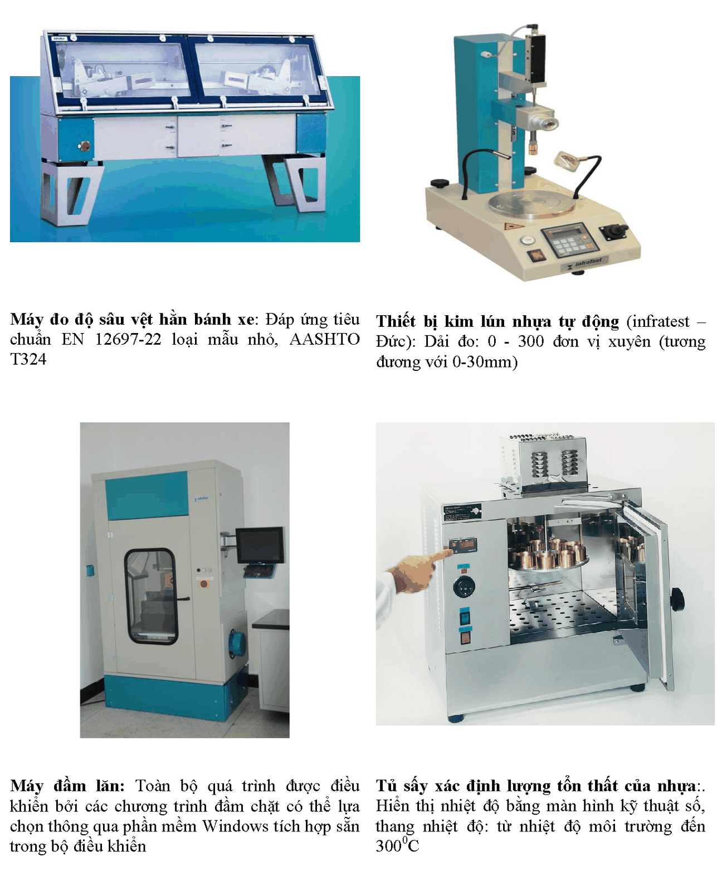
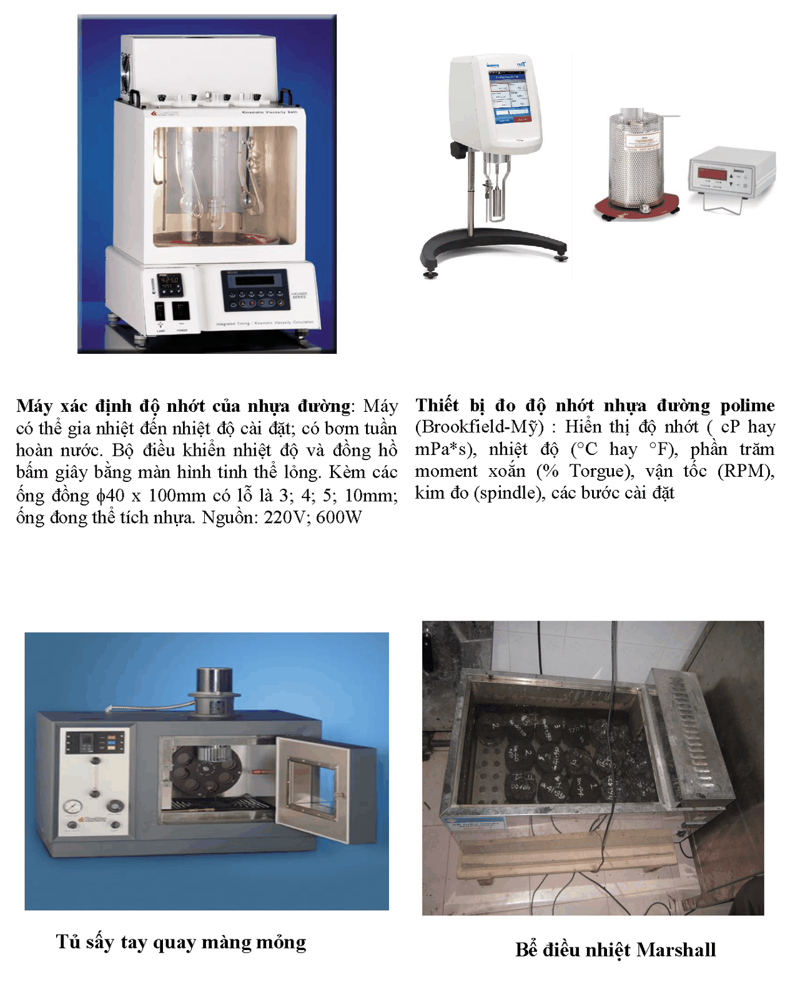
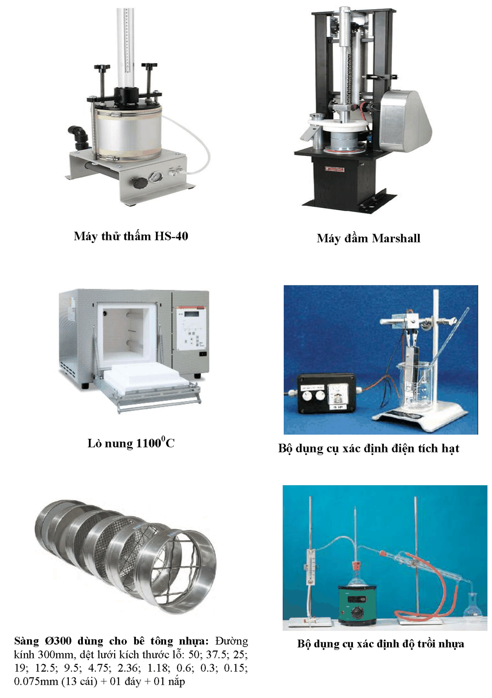
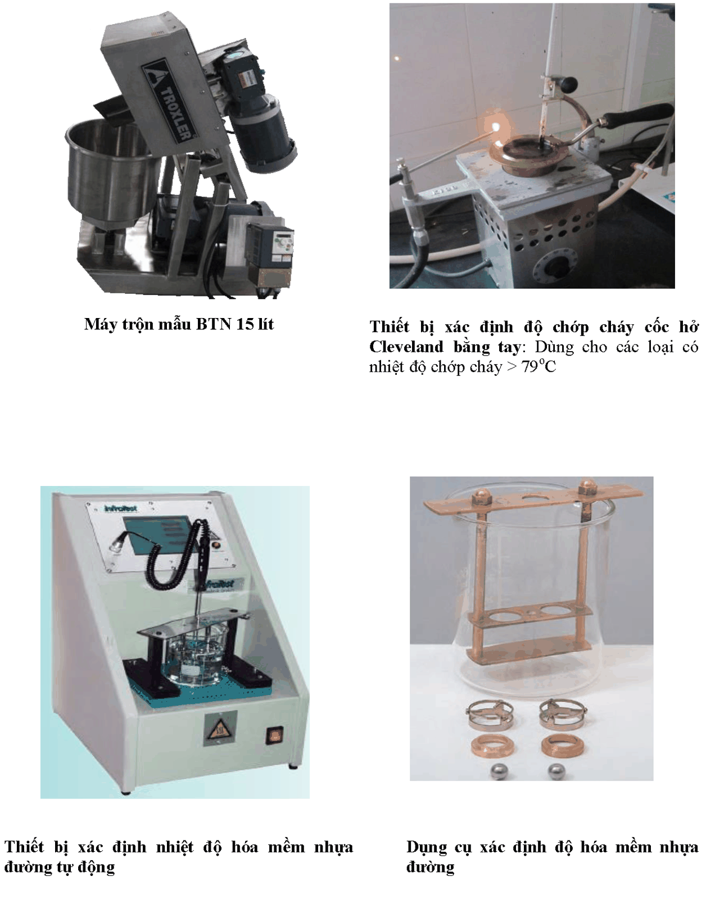
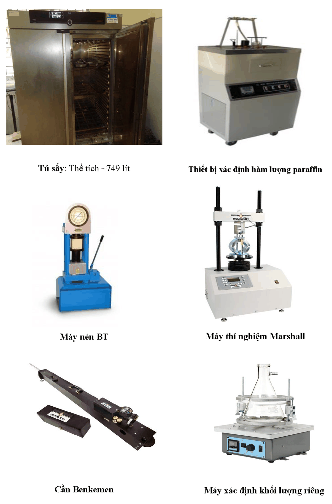
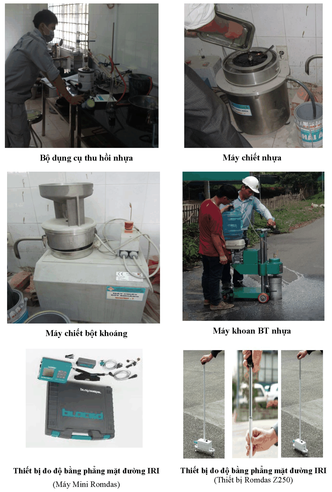

📍 450 Lê Văn Việt, P. Tăng Nhơn Phú A, TP. Thủ Đức, TP.HCM
📞 (028) 3736 7079
✉ info@utc2jsc.com.vn
UTC2 JSC
CÔNG TY CỔ PHẦN UTC2
Trang chủ
Giới thiệu
Dự án
LASXD-1398
Tin tức
Thư viện
Liên hệ
Trang chủ
/ Giới thiệu / Nhân lực, thiết bị và công nghệ
Nhân lực, thiết bị và công nghệ
Thông tin chung
Tầm nhìn & sứ mệnh
Sơ đồ tổ chức
Nhân lực & thiết bị
Hệ thống QLCL
Khen thưởng
Hợp tác trong nước
Hợp tác ngoài nước
Đối tác
MÁY MÓC, THIẾT BỊ VÀ CÔNG NGHỆ
MỘT SỐ MÁY MÓC, THIẾT BỊ VÀ
CÔNG NGHỆ TIÊU BIỂU






Zalo
📞